Last edited by: Eric Mader 2007-03-02
Introduction
This document describes how to use Eclipse to work with ICU4J. Eclipse is a free, open source, Integrated Development Environment (IDE) for Java development, available from eclipse.org.
The instructions in this document are specific to Eclipse version 3.1.x. To access the instructions for 2.0 look here.
Please checkout the "Getting started" section of the Eclipse FAQ for additional information.
If you're here from the Readme, you probably already have the files you need checked out. If that's the case, you'll probably be more interested in skipping the first half of this and start here.
The newsgroups can be accessed through a web interface. To ask questions you will need a newsreader and a login. You will be asked for a username and password. The username is exquisitus and the password is flinder1f7.
Installation
1. Eclipse requires JDK/JRE 1.3.1 or later, installed as the default, in order to launch properly ( FAQ). Download and install JDK/JRE if one is not already installed.
2. Download a release of Eclipse SDK. Unzip the downloaded zip file to a reasonable location.
Perspectives and Views
Eclipse has the notion of perspectives and views. Broadly speaking a perspective is an interface with many views associated with it. In ICU4J you would mostly be working with "Java", "Debug", and "Resource" perspectives.

Note: In versions of Eclipse before 3.0, the "Install & Update" perspective was used to install new features like the C/C++ IDE or to update Eclipse itself. That feature has been moved to the Help menu

Configuring Eclipse
Select Window > Preferences to launch the preferences panel. An example snapshot of the panel appears below.

1) Select General then Workbench in the left frame. Un-check "Perform build automatically on resource modification" in the right frame.

2) In the left frame, select General > Editors. In "Text Encoding" section select "Other" and "US-ASCII" from the drop down menu.
3) Select General > Editors > Text Editors and click the Style tab. Tab size should be set to 4.
4) Select Java > Installed JREs. The default JRE will be present and checked. Enter any additional JREs you wish to use.
5) Select
Java > Code Style > Formatter. You can either create a
new profile or modify one you have. The important part is that you
choose "Spaces Only", Indentation size of 4 and Tab Size of 4

6) Select
Java > Code Style > Code Templates. Select "Comments >
Files" in the right pane and click Edit.

Add the following lines in the space
provided:/*
******************************************************************************** Copyright (C) 1996-${year}, International Business Machines Corporation and ** others. All Rights Reserved. **********************************************************************************/${package_declaration}${typecomment}${type_declaration}
Note: the string “${year}” will be replaced by the four digit year, so the “*” characters at the ends of the lines will line up, even though they look wrong above.
Select Java > Code Style and check the 'Automatically add comments for new methods and types' checkbox. Now every time a new class is created copyright notices are automatically added.

An alternative method would be to check the checkbox for 'Generate Comments' each time you create a new class.

Subversion
Subversion support is not built into Eclipse. To get this support, you need to install Subclipse. Follow these instructions to install it.
Once Subclipse is installed, select Window > Preferences... to bring up the Preferences dialog. Expand the “Team” folder and select “SVN”:
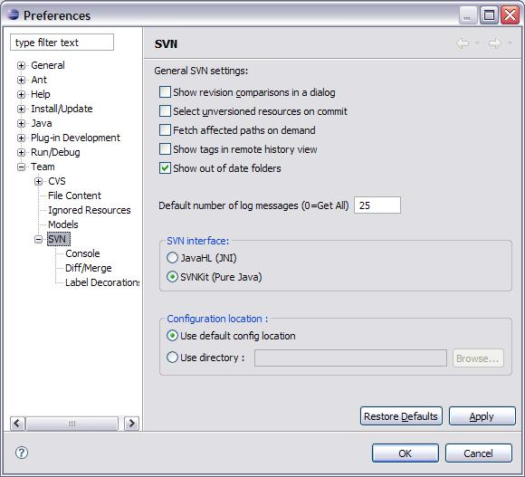
Check “SVNKit (Pure Java)” under “SVN Interface:”. This tells Subclipse to use the built in Java Subversion implementation. (JavaHL is a native Subversion interface that uses JNI. It's not available on all platforms.)
Set up Subversion Access to the Repository
1. Select Window > Show View > Other.
2. Expand the SVN folder and double click on "SVN Repository".
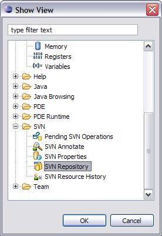
3. In the palette that is displayed ("SVN Repository" view), right click > select new > Repository location. This will show a dialog box. Enter appropriate data as shown below and click “Finish”. A new repository location will be created with the information entered.
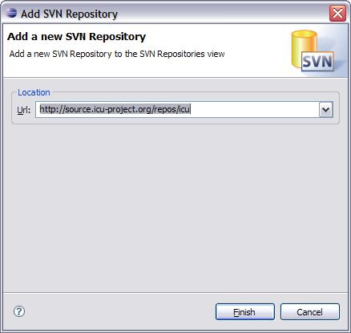
Setup SSH Access
The setup above will give you read-only access to the repository. If you need to commit, you need to use SSH to access the repository. Here's how to set it up:
1. Fill in the “Add SVN Repository” dialog like this:
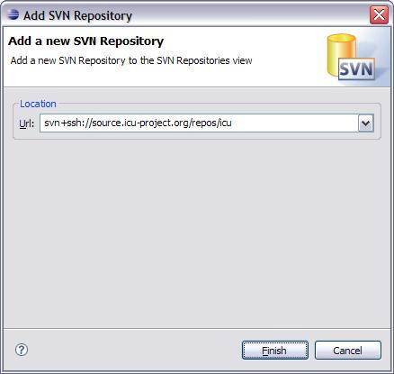
2. Click “Finish”. This will bring up the “Enter SSH Credentials” dialog:
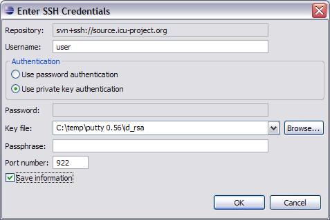
3. Fill in your user name in the “Username:” field.. Click on “Use private key authentication”. Use the “Browse...” button to browse to your RSA private key file. If your RSA key file has a pass phrase, enter it in the “Passphrase:” field. Change the “Port number” field to 922. Check “Save information” and hit “OK”. Add your user name to the Enter SVN Author Name dialog and check “Save author name”.
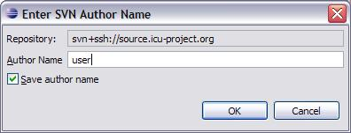
Note: These dialogs seem to pop up from time to time, even after “Save information” or “Save author name” has been checked. When they do, make sure everything is set up like above and hit “OK”.
Creating project for ICU4J
There are two ways to create a project in Eclipse for ICU4J, a new project can be created and pointed to an existing workspace on the disk or a fresh check out can be performed to set up the workspace.
Existing Checkout
1. Select File > New. In the New Project dialog box that pops up, select 'Other' and then "Java Project". Click "Next".
2. In the dialog box that pops up, give the project a name, then switch to 'Create project from existing source' and the location where the source of ICU4J currently resides, and click 'Next'.
3. Set up the "src" directory as the source and "classes" directory as the output directories, and let the wizard guide you through the rest.
4. In the "Package Explorer" view of Java perspective, select the newly generated project > right click > Team > Share project. The wizard should guide you through specifying the repository location for updating the project.
Clean Checkout
From the SVN repositories view:
1. Expand the repository location > icu4j > trunk.
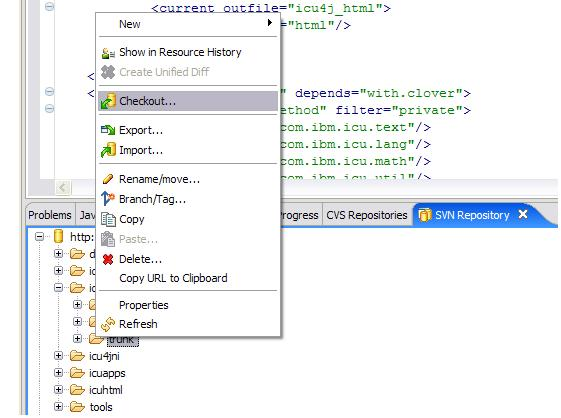
2. Right click on icu4j and select "Checkout..". On the “Checkout from SVN” dialog choose "Check out as a project configured using the New Project Wizard" and hit “Finish”.
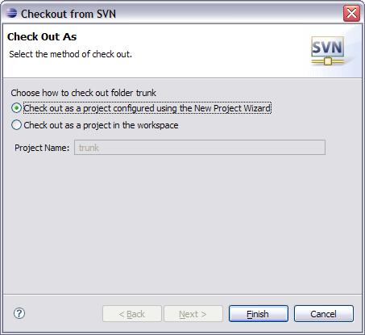
3. This brings up New Project dialog box. Select "Java Project" and "Next".
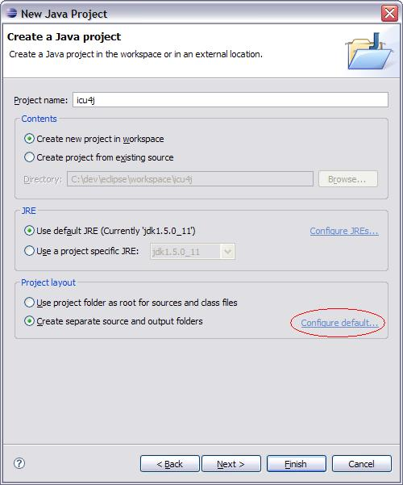
4. Give the project a name. It will be a New Project. Use default compiler compliance and create separate input and output folder. Then click on "Configure default..."
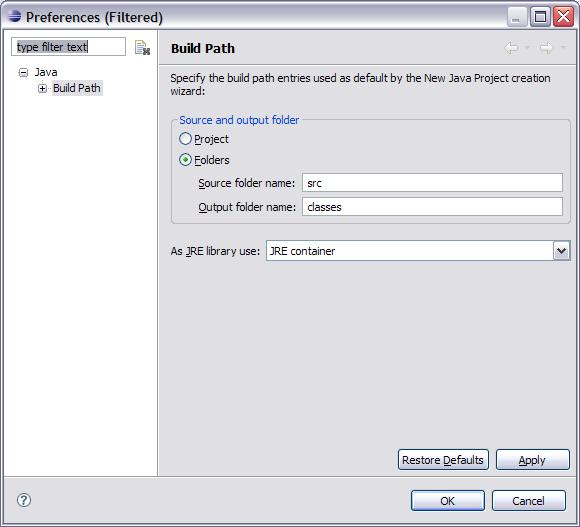
5. Choose "Folders". Use "src" for a "Source folder name" and "classes" for an "Output folder name".
Note: Do not select "Checkout as project" on the context menu. This will automatically perform checkout and creates a generic project in the default location which is in <eclipse>/workspace directory.
Note: On LINUX set the project location to ~/icu4j to get it to check everything out into the right directory. Go through the verification process as explained below after the project is created.
From the File menu:
1. Select File > New & gt; Other. This brings up New Project dialog box. Select CVS > Checkout Projects From CVS. Click "Next".
2. Choose "Use existing repository location" and then choose the location you set up before. Click "Next".
3. With the next dialog, either by typing "icu4j" in "Use specified module" or by browsing to it using the "Use an existing module".
4. Right click on icu4j and select "checkout as..". Choose " Check out as a project configured using the New Project Wizard".
5. This brings up New Project dialog box. Choose "HEAD" and "Finish". Select "Java Project" and "Next".
6. Give the project a name. It will be a New Project. Use default compiler compliance and create separate input and output folder. Then click on "Configure default..."
7. Choose "Folders". Use "src" for a "Source folder name" and "classes" for an "Output folder name".
Open Java Perspective. Select Window > Show View > Package Explorer. In the "Package Explorer" view, right click on the ICU4J project (folder) and select properties.
1. Select "Subversion" in the left pane and verify the settings.
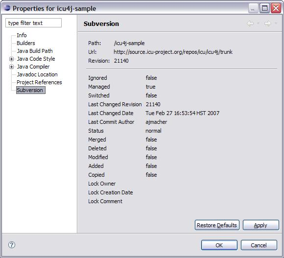
2. Select "Java Build Path" in the left pane
i) Click on the "Source" tab and open the “icu4j/src” folder. If the “Excluded:” list is empty, select it, hit “Edit...” and add “com/ibm/icu/dev/eclipse/**” to the “Exclusion patterns” list at the bottom of the edit pane. When you're done, the Java Build Path should look like this
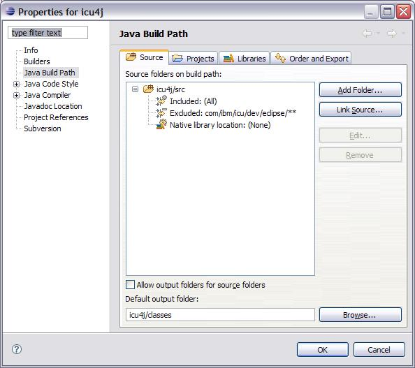
ii) Click on the "Libraries" tab and verify the jars are included as shown below. If any jar is not present, click on "Add external jars" to navigate to the directory containing the jar you would like to add and add it. "tools.jar" is usually in <JDK Path>/lib. If you are on a Mac, "tools.jar" will not always be found. It may be named "classes.jar".
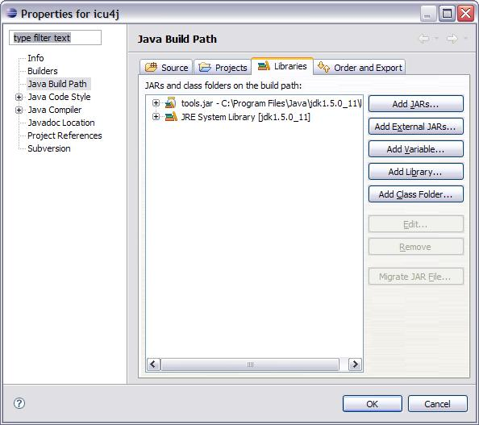
Building and Testing ICU4J
Open Java perspective and "Package Explorer" view. Select "build.xml" > right click > Run Ant. In the dialog box that pops up, check "core" and "tests" and click Finish.
Note:
If JRE is used launch Eclipse then special steps are need to run
ANT. Right click on build.xml -> Run Ant. In the dialog box that
pops up, enter
"-Dbuild.compiler=org.eclipse.jdt.core.JDTCompilerAdapter" under
Arguments and check out this FAQ.
OR
Select Windows > Preferences from the Eclipse Platform
menubar Select External Tools > Ant from the Preferences' window
menu Select the Classpath folder Click on the Add Jar... button and
add your PC's jdk tools.jar <(!example!>Apply changes
.
More information about ANT and Eclipse can be found at EclipseWiki. If you're
having trouble with the "Assert" statement see this:
Assert
To run the tests launch configuration for TestAll.java should be created.
Create Launch Configuration
Launching a class in the debugger or just running it requires setting up of a "Launch Configurations". To set up a launch configuration of a class select the dropdown next to the play button, also known as "Run" from the top toolbar and then select "Run...".

or you can use the debug dropdown "Run" from the top toolbar and then select "Debug...".

Or you could launch the configuration like shown in the figure below:

All the above methods launch the configuration panel as shown below.
Select "Java Application" and click on "New".

Enter the project, class name and other data for setting up the "Launch configuration", click "Apply", and then click "Run" or "Debug".

If the all the tests pass without any error, you have a good workspace of ICU4J.
Debugging
1) Create a launch configuration for the test class to be run.
2) Open the class in the editor by double clicking on the class file in "Package Explorer" view.
3) Set a break point as shown below
or pressing "Ctrl+Shift+B" when then cursor is placed on the
line.

4) Click the debug icon just below the top menu bar. This will launch the debugger and the "Debug" perspective.
Using ICU4J repository from Eclipse
Care should be taken while adding/ deleting/ committing files to the ICU4J repository through the Subversion interface provided by Subclipse.
Committing edited files
To commit a file to the repository after editing follow the steps below:
i) In the "Package Explorer" view of Java perspective, right click on the project and select Team-> Update. This will update your workspace.
ii) Run all the tests again and verify that all tests pass.
iii) In the "Package Explorer" view of Java perspective, right click on the project and select Team-> Synchronize with Repository. This view will show all Incoming Changes, Outgoing Changes, and also comes with an integrated diff tool. Double clicking on any file will launch the diff tool.
iv) Once the changes made are verified, right click on the file and select "Commit" from the context menu. Enter the message for commit in the following format : "ticket:<number>: <message>". (No space between “ticket:” and the number.)
Adding new files
Before checking in a new file into Subversion please make sure you perform the following steps:
i) Verify that the file you are trying to add is of extension (*.java,*.txt) and content (Text, binary) known to Eclipse. Select Window -> Preferences, in the screen that is launched expand Team tree in the left column and select "File Content". Check if the extension is present and contents section identifies the contents correctly.
ii) ICU4J uses default
Keyword
substitution for files. Ensure that the default is turned on
for the files you are adding into the repository. Right click on
the file/directory select Team from the context menu then select
"Change ASCII/Binary Property". In the dialog box launched select
"ASCII with keyword substitution" and from the dropdown menu select
"ASCII with keyword expansion
(--kkv)" and let the wizard guide you to finish.
Note: Do not use Subclipse and another Subversion client on the same copy of ICU4J. This can cause problems since Eclipse maintains a backup database of all changes that you have made. If you do use Subclipse and another Subversion client on the same local copy, you need to perform refresh ICU4J project by right clicking on the project in "Package Explorer" view of Java perspective and selecting "Refresh".
Creating a Test Project that Depends on ICU4J
To create a test project that depends on ICU4J, follow the steps given below:
1. Select File > New > Project.
2. In the dialog box that is launched select "Java Project" and click "Next."
3. Enter project name "test", to be
created then click "Next".

4. Make sure your Source tab looks as
shown below. If you've been following the steps above it should.
Then click "Finish".

5. Verify the settings by right clicking on the project named "test" in "Java" perspective in "Package Explorer" view and selecting properties.
6. Select "Java Build Path" in the
left pane and click on the "Projects" tab. Make sure "ICU4J" is on
the build path. If not add it by choosing "Add".

7. Select "Project References" in the
left pane and check the box to the left of folder named "ICU4J" and
click ok.

8. Add a new class to the project. Select the source folder in "Package Explorer" view > right click > New > Class.

9. In the dialog launched, enter data
appropriately and click "Finish".

10. At this point a class named "Test" in
package "com.ibm.test" will be created with boiler plate code. Add
the following code and try to compile and run it.
package com.ibm.test;
import com.ibm.icu.lang.*;
public class Test{
public static void main(String[]args){
System.out.println(UCharacter.isLegal(3));
}
}
Using Eclipse's default Java Builder w/ ICU4J
With JDK 1.3.1 *or* JDK 1.4.1
Right click the project in the "Java" Perspective or the "Resource" Perspective, and select "Properties" in the context menu.
Select Builders in the left pane of the Property panel.
Click the New... button on the right hand side
Select Ant Build and then click the OK button
Change the name to "Ant _resources"
Click the Browse Workspace... button under the Buildfile box.
Select the
ICU4J project on the left hand side. build.xml will appear on the
right hand side. Select it and click "OK".

Select the Targets tab, Click "Set Targets" next to Auto Build.
Click Add. In the dialog which appears, check "resources" and click OK.
Click OK on
the Properties for Ant _resources pane.

Now you should be able to use Eclipse's build commands to build your project.